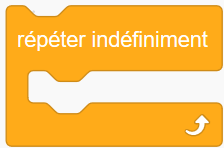

Special keyword: repeat¶
Repeating a series of instructions is something that is often done when running programs. Block-based programming environments, such as Scratch, Blockly, GP, etc, have different blocks that can be used for this purpose. For example:
{kind=link}
{kind=link}
and a “repeat forever” loop in French:
{kind=link}
Depending on the block-based environment one uses, there are up to four four main such cases, which can be written as follows in standard Python:
for _ in range(n):
'''Repeat a series of instruction n times, without having to
keep track of the specific iteration number
'''
while condition:
'''Repeat a series of instruction an unspecified number of times,
while a certain condition is met.
'''
while not condition:
'''Repeat a series of instruction an unspecified number of times,
until a certain condition is met.
'''
while True:
'''Repeat a series of instruction an unspecified number of times,
until a something inside the loop triggers a "break" to end the loop.
'''
Inspired by the choices made by creators of block-based programming environments, AvantPy introduces a few additional keywords to cover the 4 cases above in a natural way:
repeat n:
# code
repeat while condition:
# code
repeat until condition:
# code
repeat forever:
# condition
A concrete example¶
Suppose that I am teaching programming to beginners using Python’s turtle module. So far, we’ve only written programs that use one instruction per line:
from turtle import forward, left
# Draw a square
forward(100)
left(90)
forward(100)
left(90)
forward(100)
left(90)
forward(100)
left(90)
I wish to use this to show to students how we can have computers repeat a given set of instructions, instead of typing them multiple times. Using Python, here’s the natural way to do this:
from turtle import forward, left
# Draw a square
for variable in range(4):
forward(100)
left(90)
In doing so, I need to introduce all at once many new concepts and additional terms:
- the concept of an indented code block preceded by a colon;
- two keywords,
forandin;- the use of a variable, which is some quantity with a completely irrelevant name in this example, except that it cannot be a keyword;
- the introduction of a built-in function,
range(), which, unlikeforward()orleft(), does not have a visual representation.
By contrast, using the repeat keyword, the above can be written as:
from turtle import forward, left
# Draw a square
repeat 4:
forward(100)
left(90)
and we only need to introduce fewer new topics:
- the concept of an indented code block preceded by a colon;
- one new keyword:
repeat.
More gradual approach¶
As we are writing this, we note that
GP control blocks
includes the following blocs which allow for a gradual
interpolation between something like repeat 10: and the
more complex and versatile Python idiom:
for i in range(1, 10, step):
# block
{kind=link}
However, we do not see the need to include this type of granularity in AvantPy.